0. 課程資訊與教材
| 課程名稱 | 夜市小霸王 Codex 教學 (II)｜用 Codex 做辦公室自動化（3 小時實作課） |
|---|---|
| 直播日期 | 2026/07/05（日）14:00，本段錄影全長 3 小時 29 分（單段） |
| 講師 | 夜市小霸王（生成式AI應用電台訂閱制客座講師，本職是系統與程式開發） |
| 本堂主題 | 五個辦公室專題：多檔核銷彙整、口述消費記帳、口述開立報價單、會議紀錄轉任務、排程檢查郵件 |
| 與前一堂的關係 | 這是他的第二場。第一場偏物聯網與程式開發，這場刻意改成辦公室場景［10:19］ |
| 開場前 10 分鐘 | 電台主持人先示範自己做的 Node-RED 台語語音節點（透過意傳科技的台語 API 產生台語 MP3），與本堂主題無關，本頁只收兩則金句 |
| 要先準備 | 桌機版 Codex（Windows 或 macOS 都可）、一個 Google 雲端硬碟資料夾、手機上的 ChatGPT App（要用 Remote 遠端操作電腦） |
🧰 這堂用到的五份範例材料
五個專題的範例資料全部是他先請 Codex 生出來的，上課時再現場下載操作。
| 範例材料 | 課堂上拿來做什麼 |
|---|---|
input/ 五份核銷檔（ .xlsx ×2、.docx ×2、.csv ×1） | 專題一：故意做成五種格式、五種欄位，讓 Codex 讀懂後彙整成一張明細表＋互動儀錶板 |
rules/reimbursement-policy.md | 專題一：核銷規則，讓 Codex 判斷什麼算異常 |
| （無範例，自己開資料夾） | 專題二：口述記帳，從零開始跟 Codex 討論 Excel 欄位 |
公司報價單 .xlsx 範本 | 專題三：口述報價單，要求 Codex 只填既有儲存格、不破壞版型 |
samples/ 三份會議逐字稿 .txt | 專題四：轉成會議紀錄 Word 檔＋進度追蹤表 |
INV-XXX-0000、客戶單位改成「某客戶」、真實報價金額遮蔽。錄影本體沒有做這些處理，所以不放在這一頁，也請不要另行轉發；要看回放請從你自己的訂閱制課程資料夾進去。1. 一張圖看懂這堂
這堂表面上在教五個辦公室專題，實際上五次都在重複同一套動作。看懂這五格，五個專題就都會了。
2. 起點：連課程大綱和簡報都是 Codex 想的
開場他就承認一件很多講師不會說的事——今天的主題、範例、簡報，是先請 Codex 規劃的。
他的做法是丟一段需求給 Codex，內容大概是：我明天要上一堂三小時的課，主題是辦公室應用，你幫我想要介紹哪些主題；除了主題之外還要幫我做範例，範例放在專案資料夾底下；做完再順便產一份簡報，讓我上課可以講。
Codex 先回了六個候選議題。他看過之後不滿意，於是再叫它上網搜尋別人的辦公室應用案例列進候選，又多了六個（會議紀錄、跨部門知識、工作流程、AI 治理之類）。最後他自己從裡面挑、自己加，才定案成五個專題。
- 他要的不只是主題，是「可操作的範例資料」——沒有樣本檔，上課沒辦法帶學員一起動手。
- 簡報也是同一份對話生出來的：Codex 寫了一支 Python 腳本去產
.pptx，不是逐頁手做。 - AI 治理那類題目他直接砍掉，理由很直白：「離我太遠了。」［14:00］
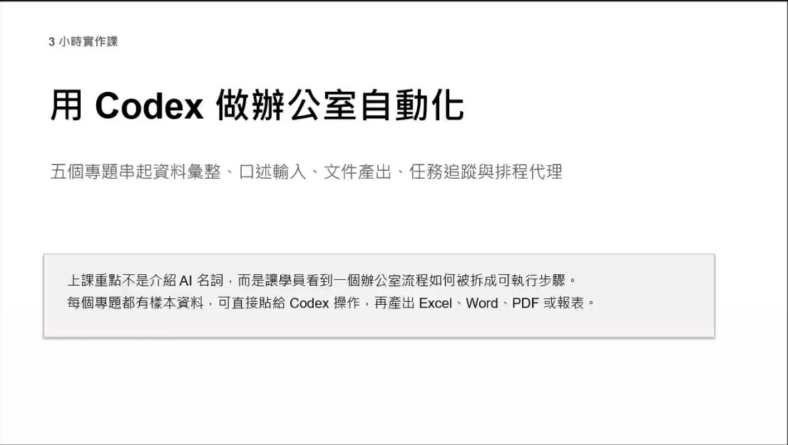
3. 誠實的一段：LINE 進不了 Codex，這題他當場停掉
這八分鐘沒有任何成果，但它是整堂最有教學價值的一段——因為它示範了「問到底」長什麼樣。
他原本最想做的題目是：客戶直接在 LINE 裡說要買什麼，系統就自動產生報價單，他只負責檢查後轉傳。他把這個想法丟給 Codex 討論了一陣子，然後得到一個結論：做不到。
卡在哪裡
- LINE 訊息是不定時的，不像排程可以每天九點觸發。
- Codex 沒辦法被外部觸發——這是他反覆強調的那一句。LINE 的 Webhook 打不進 Codex。［18:53］
- 呼叫 API 不等於呼叫 Codex：API 只能打到 OpenAI，網頁版的 GPT 確實能產出一張報價 Excel，但檔案留在網頁上還得下載；他要的是檔案直接落在自己電腦，這樣才能遠端叫電腦把它轉傳出去。
- 唯一的路是 Codex CLI 遠端呼叫，但缺點是那次執行不會留在對話紀錄裡。他要長期看得到「我什麼時候報了什麼價」，所以這條也不合格。
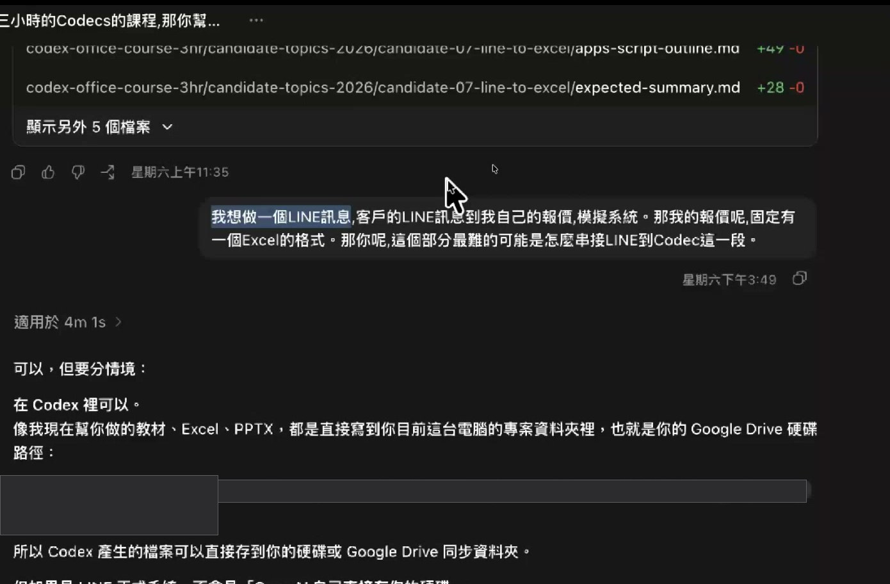
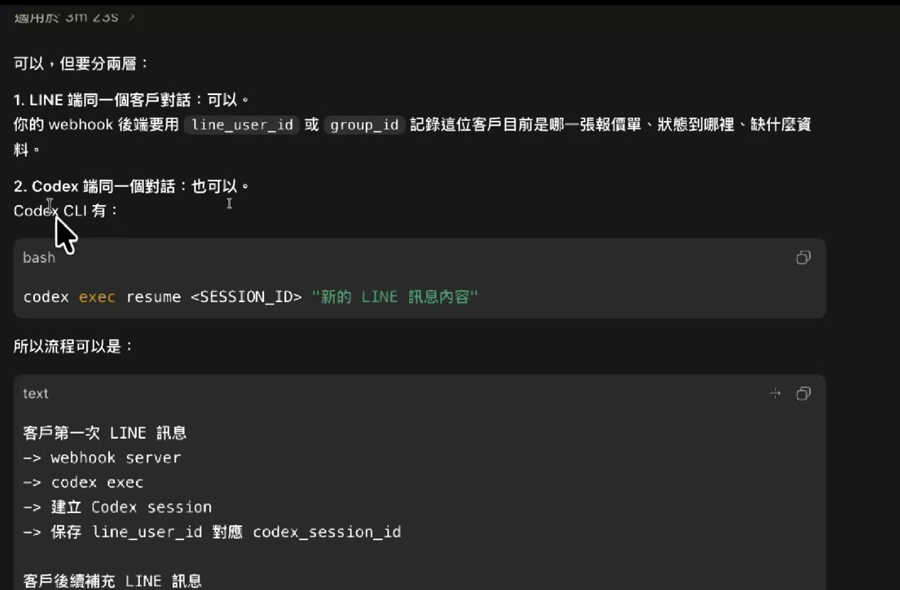
line_user_id 記住這位客戶目前在哪張報價單；Codex 端則只有 codex exec resume <SESSION_ID> 這條路。看這張就懂為什麼他放棄——技術上通，但要自己架一台 webhook server。［20:31］4. 五個專題共用一條骨架：混亂輸入到可審核成果
先看完這兩張投影片，後面兩個半小時就只是同一件事做五次。
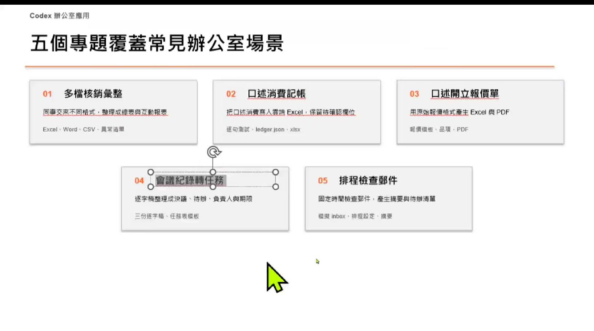
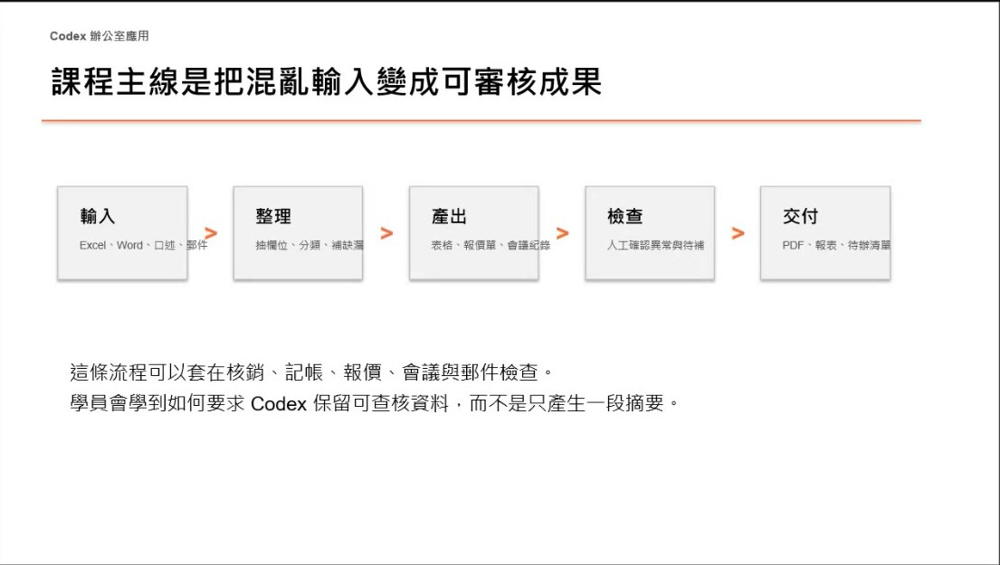
五個專題的輸入與輸出
| 專題 | 輸入 | 輸出 |
|---|---|---|
| 01 多檔核銷彙整 | 五位同事交來的 Excel、Word、CSV、記事本，格式與欄位都不一樣 | 一張明細 Excel＋一頁互動 HTML 儀錶板＋疑似重複報支清單 |
| 02 口述消費記帳 | 一句話：「我在 7-11 買了一個春之茶二十塊」 | 雲端 Excel，欄位自動對齊，保留原始口述可追溯 |
| 03 口述開立報價單 | 一句話報客戶、品項、單價、數量，加一份公司報價單範本 | 照範本填好的 .xlsx，自動命名、自動分客戶資料夾 |
| 04 會議紀錄轉任務 | 三份會議逐字稿 .txt | 會議紀錄 Word 檔＋進度追蹤表（負責人／項目／期限／是否完成） |
| 05 排程檢查郵件 | 一句話設定：每小時、上班時間、只挑要人工回覆的 | 定時執行的排程任務，列出待回信件，還能直接代回 |
5. 他每天真的在用的自動化：叫 Codex 把錄影上傳 YouTube
在進入練習之前，他先秀了一個不是為上課做的、他每天在用的例子。
他每上完一堂課都會把錄影上傳 YouTube 給學員回放。以前要自己找檔案、上傳、改標題、選播放清單。現在整段交給 Codex：
- 問它「去檢查我雲端硬碟的會議紀錄裡面有沒有新影片」——它花兩分鐘掃完，回報找到兩支，附修改時間與檔案大小。
- 下一句只說「把列表的 1、2 傳到 YouTube」，並補一個關鍵條件：不要下載影片，直接開 Chrome 上傳，省掉下載再上傳那一輪。
- 再補一句「我有建立一個播放清單，放到這個播放清單」，它就自己登入、上傳、回傳連結。
- 之後每天只要說一句「今天又有新的了，你繼續上傳」，它連檔名的命名風格都會照他改過的規則走。
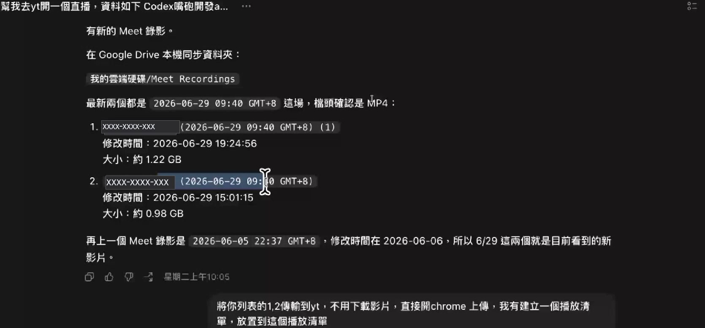
我的雲端硬碟/Meet Recordings底下最新兩支、檔頭確認是 MP4、修改時間與約 1.22 GB／0.98 GB 的大小，最後還交代「再上一個錄影是 6/5，所以 6/29 這兩個就是目前看到的新影片」。這種把判斷依據講出來的回報，才是他敢放手讓它上傳的原因。（會議代碼已遮蔽）［28:01］6. 先打開這個開關：Ctrl＋1 讓聽寫在整台電腦都能用
這是全堂最容易被低估、但門檻最低的一招。後面三個專題全靠它才不用打字。
Codex 內建語音聽寫，但重點不是「Codex 裡面可以講話」——而是設定完之後，那支麥克風會常駐在整台電腦，任何視窗、任何輸入框都能按一下就開始聽寫，連 Codex 關掉了都還在。
設定方式（一次設好，永久有效）
- Codex 左下角點自己的名字 → 設定。
- 找到一般裡面往下的聽寫區塊。
- 把「按住聽寫快速鍵」改成一個沒人在用的組合。他用 Ctrl＋1，並提醒不要選 Ctrl＋C／V／A／Z／Y。
- 把下面的保持顯示聽寫列打開（預設是開的，被關掉就補開）——這一步才是讓麥克風常駐的關鍵。
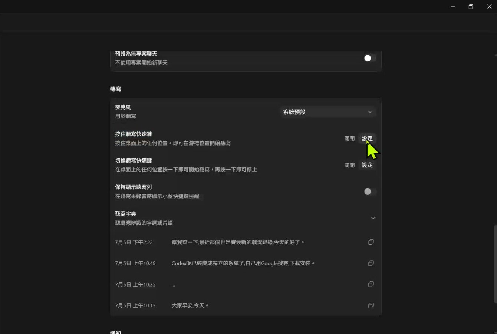
他當場示範的三件事
- 在 Google 搜尋框講話：唸「幫我查一下最近那個世足賽最新的戰況紀錄，今天的好了」，字直接進搜尋框。
- 在 Word 裡講話：唸「今天呢，很開心能在這邊跟大家分享 Codex 的各種應用」，整句連
Codex都拼對。他說用 Google 的語音輸入通常會聽成同音字。 - 中英夾雜：他認為 Codex 的聽寫在中英混講時比 Google 準，而且講錯的同音字它會自己修掉。
7. 專題一開場：五個人交五種格式，先讓 AI 讀懂再說
他刻意把範例資料做成一團亂，因為現實就是這樣。
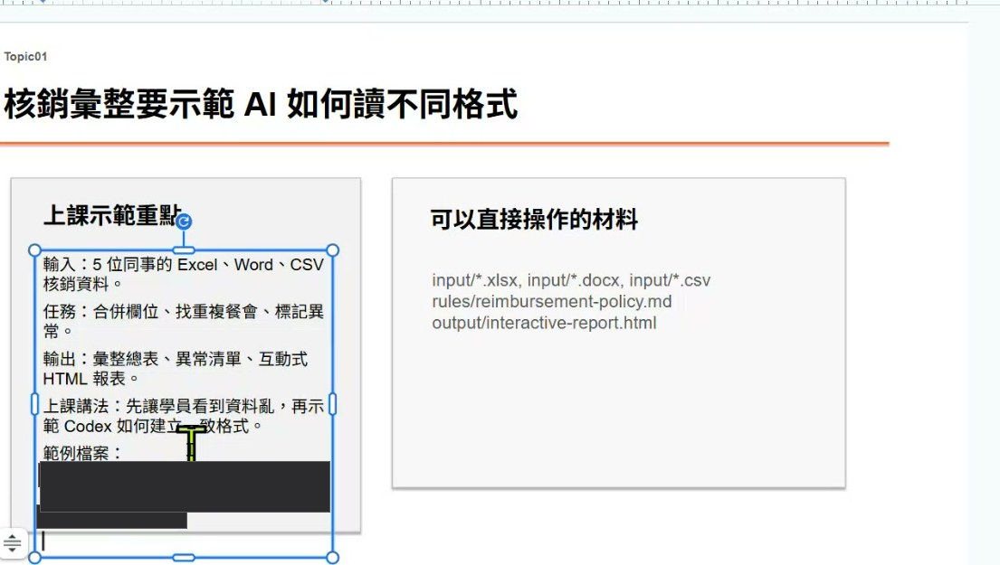
五個檔案亂在哪
| 檔案 | 格式 | 亂在哪 |
|---|---|---|
| 員工Ａ（業務部） | .xlsx | 最乖：有核銷人、部門、日期、類型、用途、金額、付款方式、發票號碼 |
| 員工Ｂ（資訊部） | .docx | 沒有表格，整份用分號串成條列句 |
| 員工Ｃ（人資部） | .docx | 沒寫自己是誰，只有日期與事項 |
| 員工Ｄ（行政部） | .xlsx | 欄位順序與Ａ不同 |
| 員工Ｅ | .csv | 純逗號分隔，沒有標題列 |
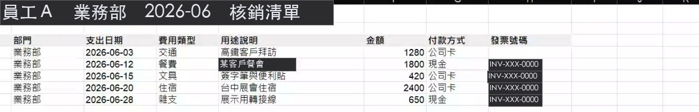
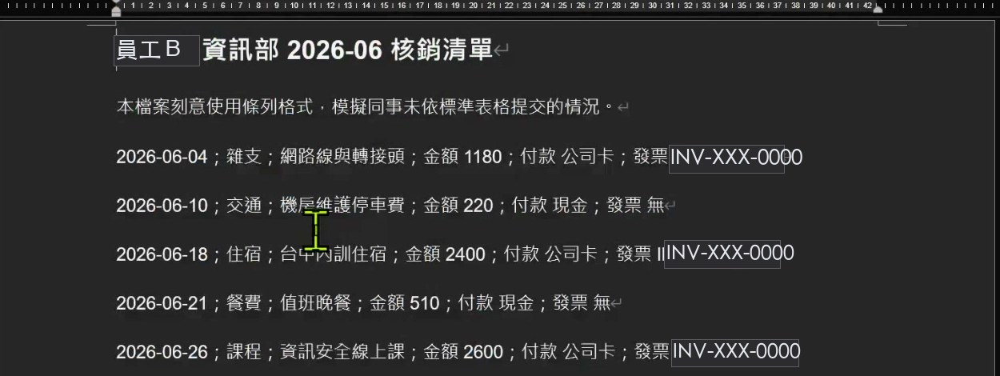
他為什麼不發統一的 Excel 表就好
這是這一章真正在講的事。他說如果要大家格式一致，發一個 Excel 給大家填就好了——但問題是每個人都得先把資料收集好、回辦公室打開 Excel、把欄位一格一格對好。大部分人在外面消費完，只會隨手記在手機記事本上，回去再填一次正式文件。
8. 開專案的兩個習慣：加一句「先討論」、思考強度選「中」
這兩個小動作看起來很小，但它們決定了你是不是來得及攔住 AI。
習慣一：指令最後加一句「先討論」
他建立專案後的第一句話是這樣送出去的（注意最後一行）：
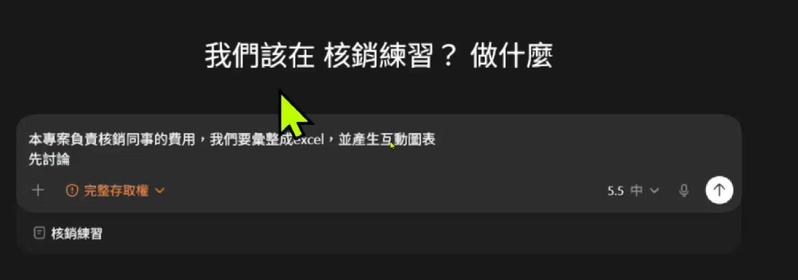
有學員問是不是要選規劃模式。他的回答很實際：Codex 把這條界線畫得有點模糊，規劃模式並不是只能規劃不能操作，規劃到一定程度它還是會開始做。除了大型專案，他幾乎不開規劃模式，就是在指令後面加「先討論」。
Codex 討論回來的東西長什麼樣
它先去資料夾看有哪些檔案、什麼格式（兩個 Excel、兩個 Word、一個 CSV），檢查電腦上有沒有能讀 Word／Excel 的工具（openpyxl、python-docx、pandas），沒有會自己安裝。然後才提出欄位設計。
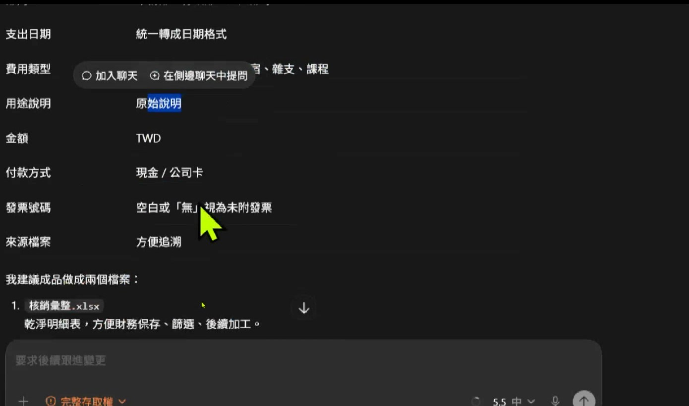
.xlsx 給財務，一份互動 .html 給人看。［56:31］習慣二：思考強度選「中」就好
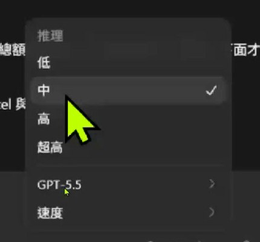
還有兩個小細節值得抄
- 指定輸出資料夾：他多補一句「相關檔案都放到專案資料夾底下
output」，並說「他其實不會亂放，但我想說還是跟他提醒一下」。 - 給完整存取權：要讓它自己建資料夾、開檔案，權限要開到完整，不然它會卡在每一步問你。
9. 專題一收成：一張明細表加一個互動儀錶板
五個亂七八糟的檔案，變成兩個能直接拿去開會的東西。
Excel 那份是給財務的：部門、日期、費用類型、用途、金額、發票號碼、來源檔案，一列一筆。真正好看的是另一份——一個不用登入、不用後端、雙擊就打得開的 HTML 儀錶板。
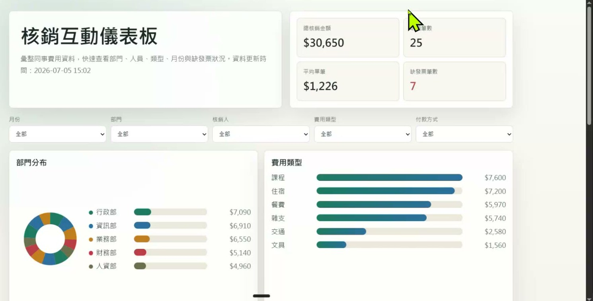
2026-07-01，那是六月資料裡混進來的異常日期。Codex 在回報時主動提醒了這一筆——它有講，只是很容易被跳過。10. 他不教提示詞，他教「邊用邊累積」
儀錶板做完，學員開始要提示詞。他的回答跟市面上的 AI 課完全相反，本頁照原話保留。
那他怎麼修？截圖給他看
儀錶板第一版的圓餅圖顏色跟部門顏色對不上，而且切片數量看起來比實際的五個部門多很多。他沒有重寫提示詞，做法是：截圖，貼給 Codex，講一句話。
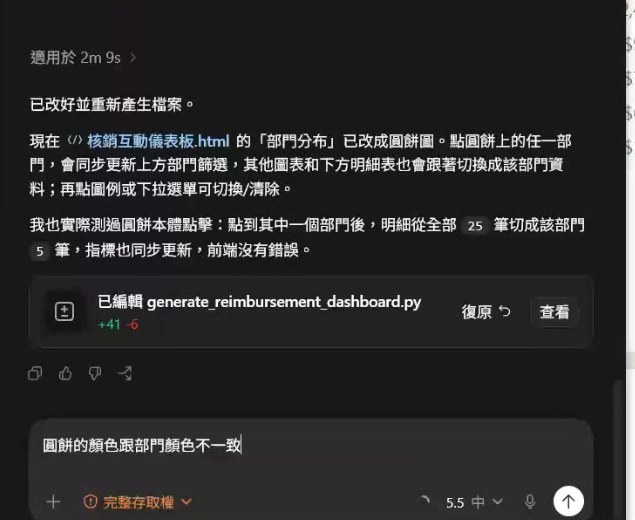
aaa、Word 產出變成問號亂碼——三次都是截圖＋一句話解決。11. 讓 AI 抓重複報支：它比對的不是發票號碼
他在範例資料裡故意埋了兩組重複核銷，然後發現一件事：不特別講，Codex 不會主動抓。
第一版的彙整結果他看過覺得沒問題，但其實裡面有兩個人報了同一筆。他說「我發現沒有特別講，他沒有抓」——所以要明確下指令。而且第一次還下錯了：他說「忽略沒有發票的」，Codex 理解成「只看有發票的」，得補一句釐清。
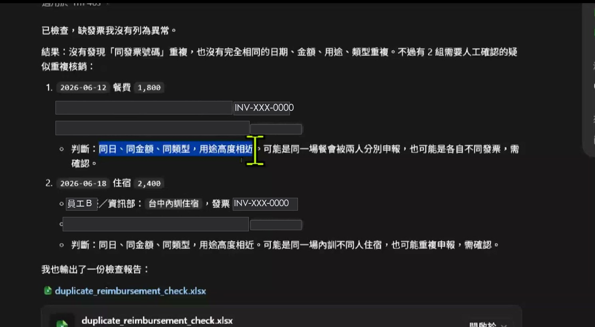
兩組疑似重複長什麼樣
| 組 | 兩筆的共同點 | 不一樣的地方 |
|---|---|---|
| 第一組（餐費） | 同一天、同金額、同類型，用途都是同一家客戶的餐會 | 兩個人分屬不同部門，發票號碼不同 |
| 第二組（住宿） | 同一天、同金額、同類型，一個寫「內訓住宿」、一個寫「教育訓練住宿」 | 用字不同、發票號碼不同 |
duplicate_reimbursement_check.xlsx 比對報告，欄位是英文的。Codex 自己說明理由：中文欄位名有時候會出問題，所以用英文。這是它在 Windows 上反覆遇到的中文編碼問題，本堂出現了三次。12. 最值錢的一招：把走過一次的流程存成技能
如果整堂只能帶走一件事，是這一章，不是任何一個專題。
六月份的核銷做完之後，他沒有直接叫 Codex 做七月。他先請它把剛才走過的整段流程寫成一個技能檔。指令短到不像重點：
Codex 產出一份 SKILL.md，把這次專案裡的產生器整理成技能內可重複使用的腳本。之後他只要說「使用費用核銷技能，處理七月這個資料夾內的檔案」，同樣的明細表、儀錶板、重複比對就全部再跑一次。
他為什麼堅持自己做技能，不用別人的
技能跟對話差在哪：一個會忘，一個不會
有學員問：換月份的資料要不要重新教技能？他的回答把兩者的分工講清楚了。
| 維度 | 對話 | 技能 |
|---|---|---|
| 作用範圍 | 只在這個對話裡記得，其他地方不記得 | 全域，任何對話、任何專案都找得到 |
| 會不會忘 | 會。對話越長越前面的越容易忘 | 不會，永遠記得 |
| 效率 | 資料量越大效率越低 | 不受對話長度影響 |
| 什麼時候用 | 同一個對話裡繼續做下個月，不用技能也行 | 要跨對話、跨專案重複使用時 |
他順手翻出實測數字：核銷這個對話已經用掉 102K 個 token（他說約十萬字），上限 258K，也就是已經用掉 40%。「你如果這邊越做越多，越前面他就會忘記。」
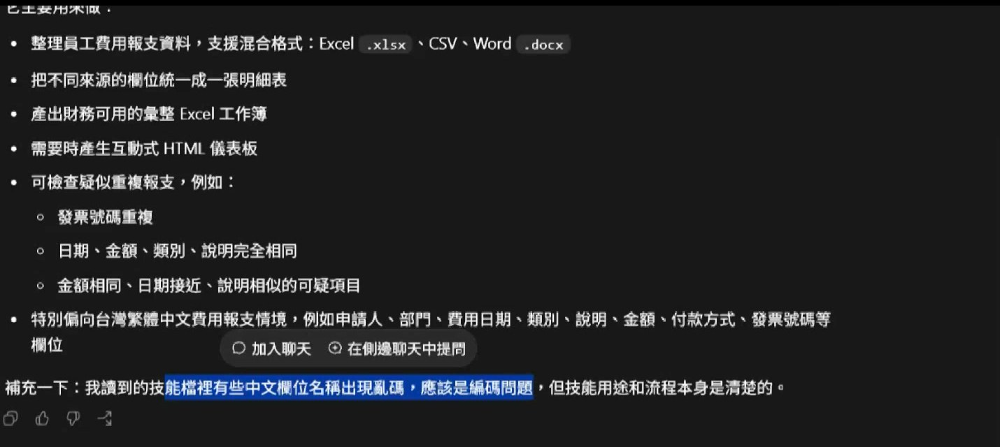
13. 專題二：唸一句話就記帳，專案資料夾放雲端
這一題沒有範例檔，從零開始跟 Codex 討論欄位——也是「先討論」用得最漂亮的一次。
先立一個習慣：專案資料夾指向 Google 雲端
他在建專案之前先做一件事：在 Google 雲端硬碟開一個資料夾，然後把 Codex 專案的路徑指到雲端資料夾而不是本機桌面。理由他重複講了三次：
- 手機隨時看得到成果——不用回到電腦前才知道 AI 做完了什麼。
- 換電腦也看得到——他上課那台是遠端電腦，另一台照樣同步。
- 記帳這種事本來就是在外面發生、在手機上查，資料放雲端才對得上使用情境。
討論的成果：三層結構與可追溯的原始口述
他的第一句同樣是「先討論」。Codex 回來的設計比他自己想的多：
- 第一層每日明細：日期、星期、時段、店家／地點、品項、分類、金額、幣別、付款方式、是否必要、情境、備註。
- 第二層月份統計。
- 第三層原始口述——這一欄是重點，語音辨識聽錯時可以追回原話。
它還反問三件事，他只挑要緊的答：個人還是報帳用（個人）、口述通常完整還是很短（很短）、Excel 要簡單好填還是完整方便分析（完整，反正不是人在填）。分類則直接交給它自己判斷，他不指定。
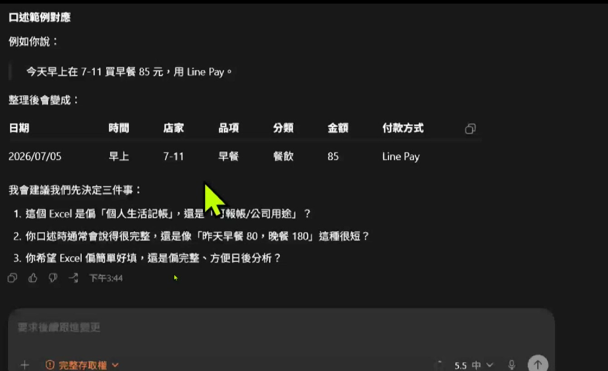
實測：講錯話也沒關係
他當場口述：「我現在在 7-11 買了一個春之茶十五塊，講錯了是二十塊，還有一個麵包菠蘿麵包三十五塊。」——句子裡有一個當場更正。
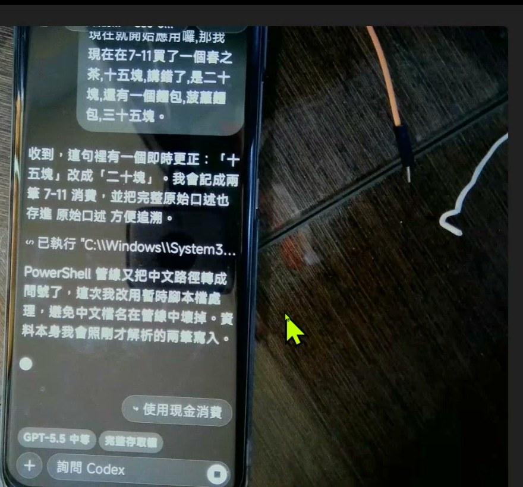
原始口述 方便追溯。」下面那段是它自己遇到的技術問題：PowerShell 管線又把中文路徑轉成問號，這次改用暫時腳本檔處理。［125:31］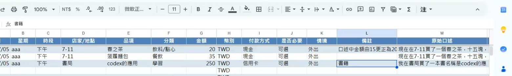
aaa 是個小 bug，他截圖給 Codex 就修好了——這種瑕疵本頁不修掉，因為它才是真實使用的樣子。［128:59］他自己說的唯一缺點
14. 專題三：口述報價單，從一句話到可以傳出去的檔案
這一題他準備最久，因為報價單是有版型的——不能讓 AI 自由發揮。
他事前想清楚的三件事
他說這一段是刻意講給學員聽的，平常他會邊口述邊想。三件事是：
- 口述要包含什麼：客戶、品名、單價、數量，有備註再加。
- 檔名格式：日期＋報價，副檔名
.xlsx。 - 要自動建資料夾放——不同客戶分開放。
然後把這三件事丟給 Codex，最後照慣例加「先討論」。他還特別補了一句提醒，因為怕它自作聰明重做一份：
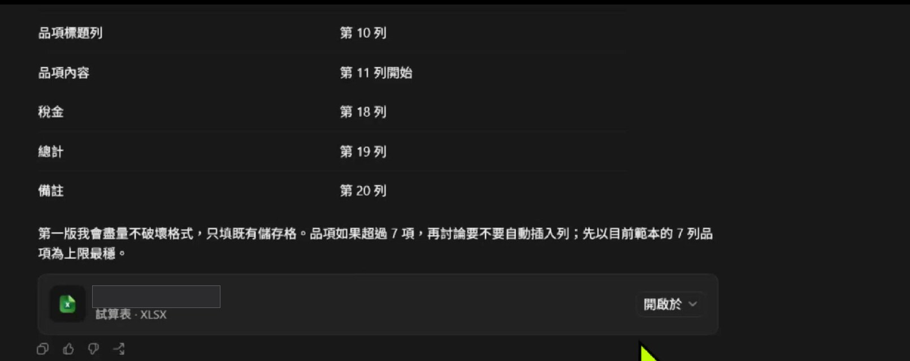
它也主動反問了幾件事，他一一裁掉：要不要建客戶清單（要）、同一天同客戶多張怎麼辦（照它的建議）、客戶資料從哪來（口述，缺的他自己補）、要不要產品價格表（先不用）、要不要順便產 PDF（先不用，他要看過再產）。
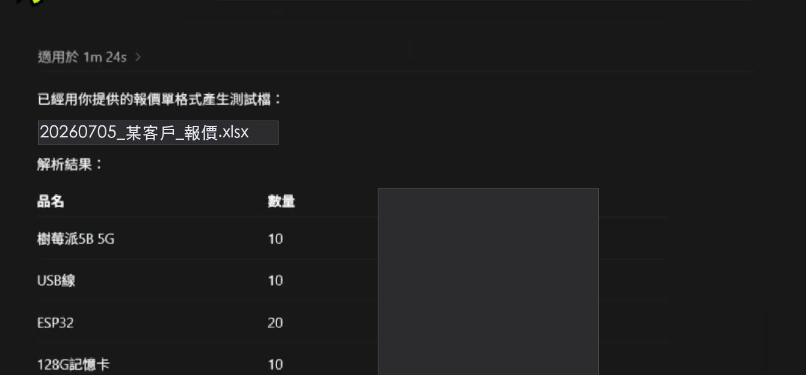
從產出到寄給客戶
他實際跑完的完整動線是這樣，全程沒有打字：
- 手機打開 Codex 對話，口述客戶、品項、單價、數量。
- 它產出
.xlsx，放進以客戶命名的資料夾。 - 他從手機的雲端硬碟 App 打開那個檔案看一眼。
- 要改就再講一句（客戶說預算不足，數量從 4 改成 3，它重算總價）。
- 沒問題就用手機的共用 → 傳送副本 → PDF，直接傳到 LINE 給對方。
15. 專題四：會議逐字稿變成有名字、有期限的追蹤表
這一題他要的不是會議紀錄，是「誰在什麼時候前要做完什麼」。
輸入是三份會議逐字稿 .txt（專案會議、客戶需求訪談、行政採購）。他的第一步照慣例：先叫它「摘要資料夾內容」，確認它真的讀到了那三份檔案，再開始交辦。
然後他把任務定義成兩個交付物，並把追蹤表的欄位講清楚。Codex 一開始問要不要做成本機命令列工具或網頁介面，他直接否掉——這一段很值得看他怎麼想：
他指定的追蹤表四個欄位
- 負責人——他強調這一欄是整張表的價值所在。
- 項目（要做什麼）
- 期限
- 是否完成（加上待確認事項）
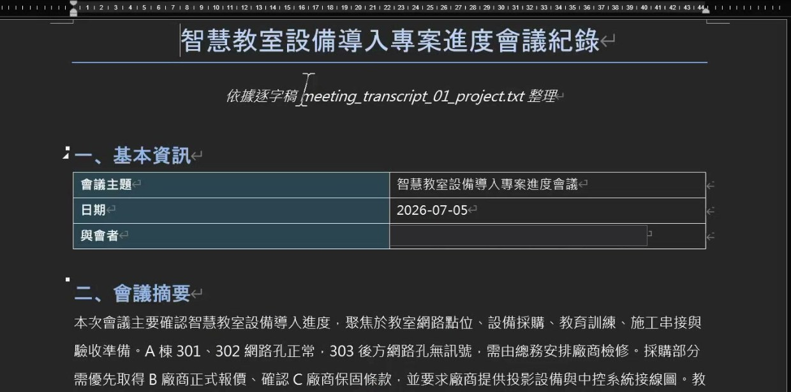
meeting_transcript_01_project.txt 整理」。基本資訊表格下就是會議摘要，把網路點位、設備採購、教育訓練、施工串接與驗收準備都收斂成一段。（與會者欄位已遮蔽）［185:25］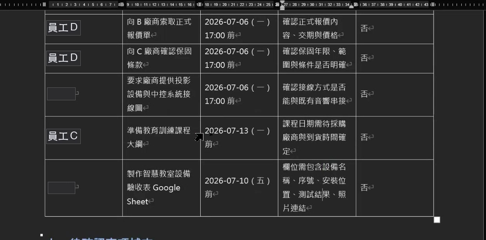
16. 專題五：讓 Codex 每小時自己去看一次 Gmail
最後一題是唯一「不用你開口它也會動」的一題——也是他前面 LINE 那題的替代路線。
建排程不用進「已排程」，用口語講就好
左上角有一個已排程可以建任務，但他刻意不從那裡建。他開一個普通新對話，直接用一段話交辦，建完之後它自己會跑到「已排程」裡面去。
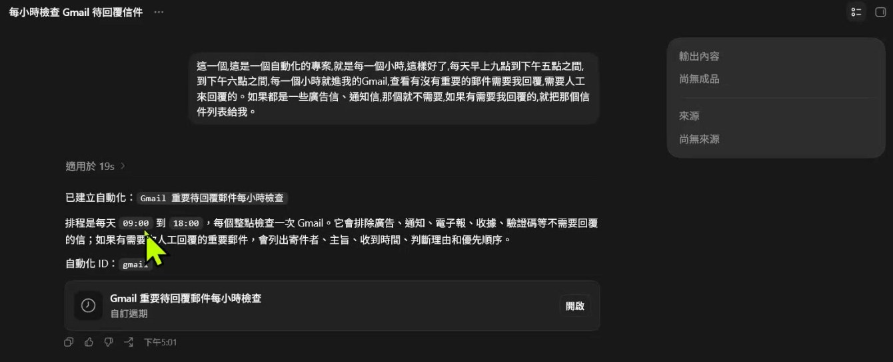
踩到的坑：時區差 8 小時
建好之後他發現「下次執行」寫的是明天下午五點，不合理。他直接問它為什麼，答案是時區問題——設定的是 09:00 UTC，台灣加八小時就變成下午五點。他請它改，它自己修正了。
他很喜歡的一個改版：排程有自己的對話紀錄
他說以前每個排程執行一次就產生一個對話紀錄，一堆重複的對話堆在列表裡。現在排程有獨立的紀錄區，所有次數的執行都掛在同一個對話下，進「已排程」就能看到每次執行的結果。
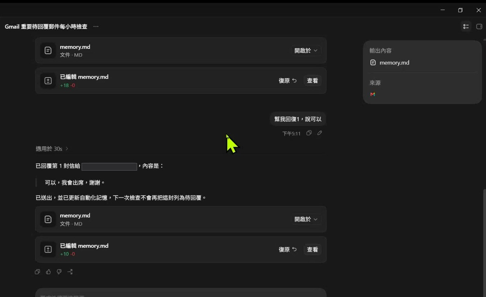
memory.md 就是它的自動化記憶檔。（收件人已遮蔽）［208:36］memory.md，下次檢查會先讀這個檔。這也是他前面 LINE 那題的替代路線：LINE 訊息轉存到 Email，再讓排程每小時去撈一次。17. 這堂課真正在教的事
五個專題只是載具。把它們拿掉之後，剩下這五件事。
一、先讓他討論，你才來得及攔住他
整堂最常出現的四個字是「先討論」。它換來的不是禮貌，是一次修正的機會：Codex 會先講它要怎麼做、欄位怎麼設、產出幾個檔案，你在那個時候說不對，成本是零；等它做完再說不對，前面全部重來。這比任何提示詞技巧都便宜。
二、把「一次的工」變成「往後每個月的零工」
做完六月核銷的下一句不是「做七月」，而是「上述核銷過程，建立一個技能」。這一句把三十分鐘的來回濃縮成一個 SKILL.md，之後換月份、換資料夾都只要一句話。而且因為是你帶著它走過一次才存下來的，你知道它裡面在做什麼——這是他不用別人技能的理由。
三、不要把流程做成全自動送出
他自己的收尾投影片就寫著這一句。五個專題的最後一步全都是人：核銷的重複報支是「需確認」不是「重複」、報價單要自己打開看過才轉 PDF、會議追蹤表的「是否完成」全部預設「否」等人勾。他要 Codex 交出的是草稿、摘要、表格與待確認清單，不是替他做決定。
四、輸入要讓人最省力，整理成本丟給 AI
他拒絕「發一份統一的 Excel 給大家填」，因為那是把成本推給填表的五個人，而且大家還會做兩次工。同樣的邏輯貫穿記帳（唸一句就好）與報價（唸客戶品項數量）。判斷一個自動化值不值得做，看的是「輸入端有沒有變輕」。
五、出錯是常態，處理方式要簡單到你願意做
這堂三小時半裡，圓餅圖顏色錯過、Excel 星期欄跑出 aaa、Word 產出變成問號、中文路徑在 PowerShell 裡壞掉、排程時區差八小時、最想做的 LINE 那題直接放棄。他的處理一律是截圖＋一句話，或者換條路。沒有一次是回去重寫提示詞。
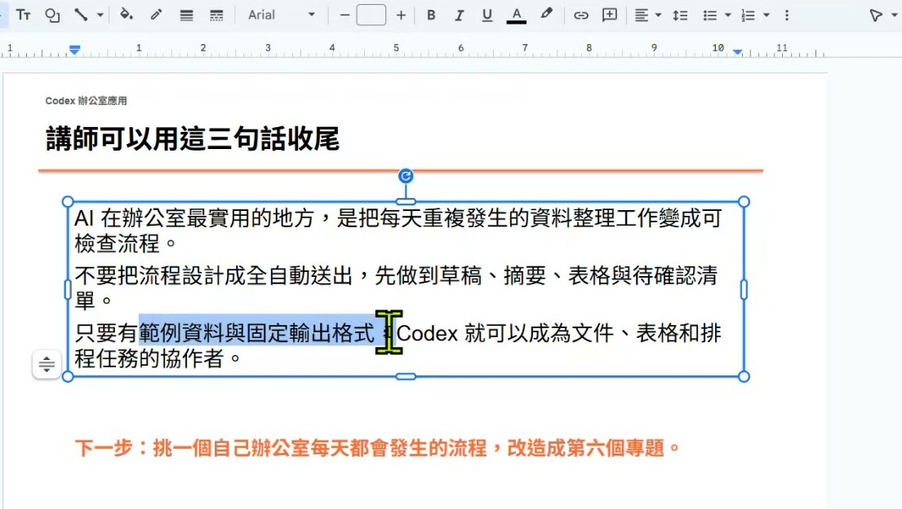
18. 老師金句
依影片時間先後排。前兩則是電台主持人的開場，其餘是本堂講師。
19. 資料來源與整理說明
| 來源 | 2026/07/05 課堂錄影單段，全長 3 小時 29 分（12,548 秒，1920×1080） |
|---|---|
| 整理方式 | 全程本機處理：以場景偵測擷取 243 張關鍵畫面、產生 2045 段逐字稿，再依逐字稿手寫章節目錄；本頁 28 張截圖從原片以 1920×1080 重新擷取後裁切與遮蔽 |
| 時間戳 | 章節標題與引文後方的［mm:ss］對應錄影播放器時間 |
| 整理 | 竹貞（Tarshar 的逐幀筆記專員） |
去識別化做了什麼
- 整片裁掉四個區域：右側線上教室與會者欄（十六個真實姓名頭像與「＋52」）、底部工作列（視窗標題含人名與本機路徑）、左側專案與通知清單（講師的私人專案名稱）、左下角的帳號與方案。
- 內容區裡的個資逐張處理：示範資料的人名改成「員工Ａ／Ｂ／Ｃ／Ｄ」，發票號碼改成
INV-XXX-0000，客戶單位改成「某客戶」，第三方學校與教授姓名遮蔽，真實報價金額遮蔽，講師的雲端硬碟完整路徑、電子郵件、主機名稱、會議代碼、Drive 分享連結全部遮蔽。 - 整幀都是線上教室介面、沒有課程內容的畫面一張都不選。
- 講師本人只用他的公開教學代號「夜市小霸王」稱呼，不寫出真實姓名或帳號；電台主持人一律寫「主持人」。
- 逐字稿裡的學員暱稱、提問者稱呼、被念出來的客戶與教授姓名，本頁一律隱去或改成代稱。
- 成品圖逐張目視＋逐張 OCR 掃過個資關鍵字清單，零命中才交出。
已知限制，請先看過再引用
- 逐字稿是機器產生的，人名與工具名會聽錯。可確定的錯字（「痊癒」→「全域」、「使作過程」→「實作過程」、「三思的後行」→「三思而後行」、「去寄別人的提示詞」→「去記」、「本早知道」→「比較早知道」共 5 類、6 處）已在引文後以〔〕註明修正；不確定的一律保留原樣，沒有猜測補詞。
- 錄影中有數段靜音時段被語音辨識產生重複幻覺（例如被辨識成影片頻道的贊助字幕或歌曲創作者署名，共約 10 處），整理時已整段捨棄，不會出現在本頁。
- 講師全場把 Codex 的技能稱作「技能」，把思考強度稱作「思考模式」，本頁照原話保留，未替換成官方英文術語。
- 示範資料全部是 AI 生成的假資料（五份核銷檔、三份會議逐字稿都是他請 Codex 產的）。人名與發票號碼雖是虛構，本頁仍一律代稱化；核銷金額與日期為虛構資料，予以保留，因為「同日同金額」正是那一章的教學重點。報價單那一題的客戶與金額是真實的，已全部遮蔽。
- 畫面文字以 OCR 輔助判讀，圖說均為人工看懂畫面後重寫，未直接貼上 OCR 結果；小字與特殊字型仍可能有誤。
- 引用到作業、貼文或簡報之前，請對照錄影原始段落再確認一次。